リンク軸を持つ複数レイヤ
MultiLayer-LinkAxes
概要
このチュートリアルでは、1つのグラフにリンクされた軸と複数のレイヤを含んで、4つのグラフを統合する方法を説明します。
- 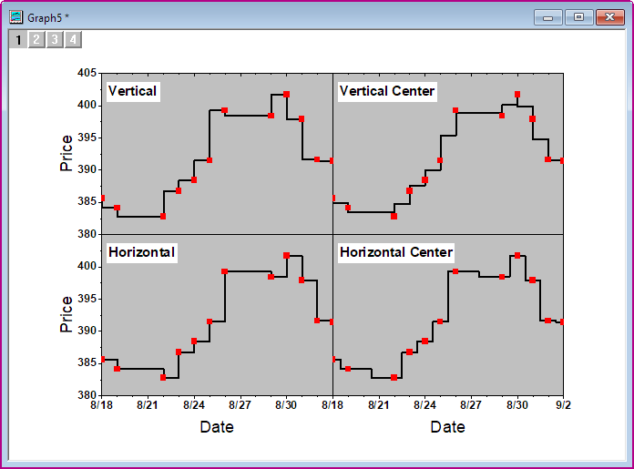
学習する項目
- 線+シンボルグラフを作図する
- グラフを統合する
- レイヤの軸をリンクさせる
- 軸をカスタマイズする
ステップ
このチュートリアルは、チュートリアルデータの<Origin EXE Folder>\Samples\Tutorial Data.opjと関連しています。
- チュートリアルデータプロジェクトを開き、プロジェクトエクスプローラで、Multiple Layers with Step Plotフォルダを開きます。
- ワークブックをアクティブにし、Value1の列を選択して作図：基本の2Dグラフ：線＋シンボルと操作します。
- グラフ上で凡例を右クリックし、コンテキストメニューからプロパティを選びます。テキストオブジェクト ダイアログで、
- テキストタブを開き、テキストボックスに\b(Vertical)と入力し、サイズを36とします。
- 枠タブを開き、以下のように設定します。OKボタンをクリックします。凡例を適切な位置に移動します。
- 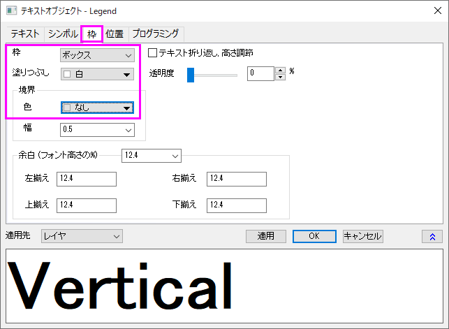
- グラフレイヤの白い空白の部分をダブルクリックして、作図の詳細ダイアログを開きます。左のパネルで、Layer1を選択します。右側パネルの背景タブを選択し、色を明るい灰色 にします。左パネルからLayer1のプロットを選択し、右パネルのシンボルタブでサイズを15、シンボルの色を赤にします。グラフの線タブに切り替え、接続線ドロップダウンリストから垂直階段を選び、太さを4にしてOKをクリックして設定を適用します。
- 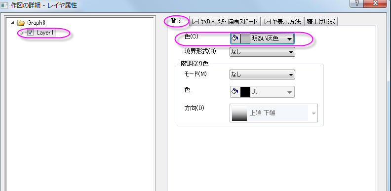
- 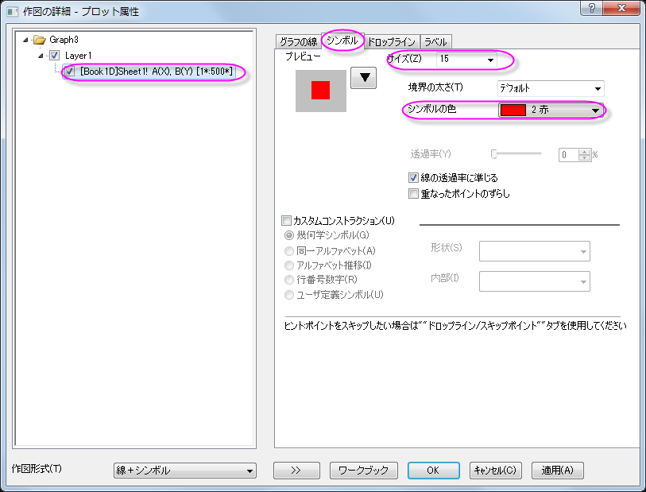
- 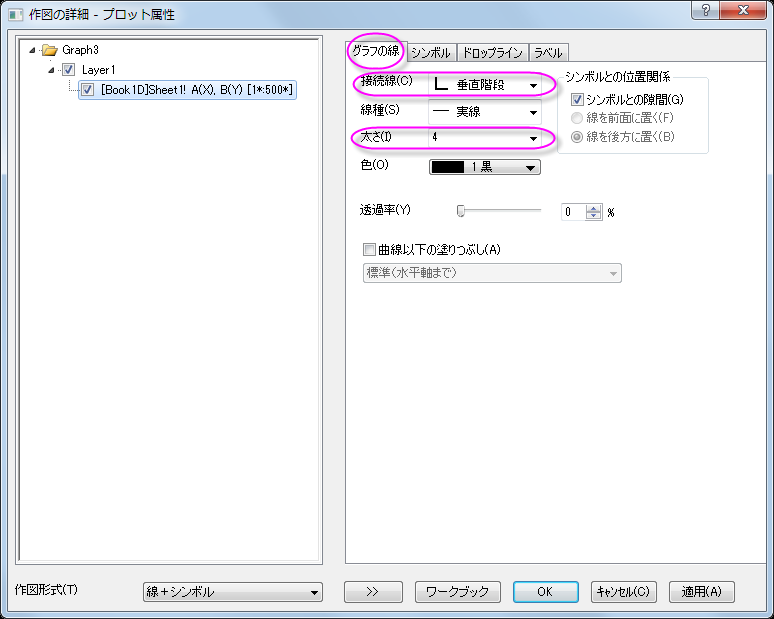
- 他の3つの列から同様のグラフを複製します。グラフのタイトルバーを右クリックし、コンテキストメニューからバッチ作図…を選択します。
- 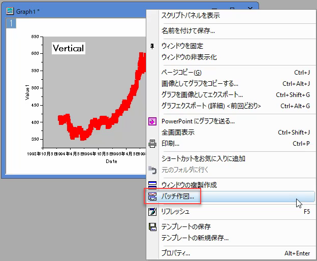
- 開いたダイアログで、バッチ作図するデータのドロップダウンリストから列を選択し、Ctrlキーを押したままC,D,E列を選択します。選択できたらOKをクリックします。
- 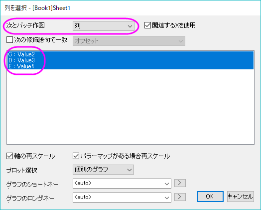
- 各列のグラフでは、凡例テキストと作図の詳細の接続線 ドロップダウンリストが異なります。
- 列値2の場合：凡例テキスト= \b（Vertical Center）； 接続 =垂直中央通過階段
- 列値3の場合：凡例テキスト= \b（Horizontal）； 接続 =ステップ水平階段
- 列値4の場合：凡例テキスト= \b（Horizontal Center）； 接続 =水平中央通過階段
- グラフをアクティブにし、Originメニューからグラフ操作：グラフウィンドウの統合を選択してグラフウィンドウの統合ダイアログを開きます。下図のようにダイアログを設定します。そして、OKボタンをクリックし、これらのグラフを統合します。
- 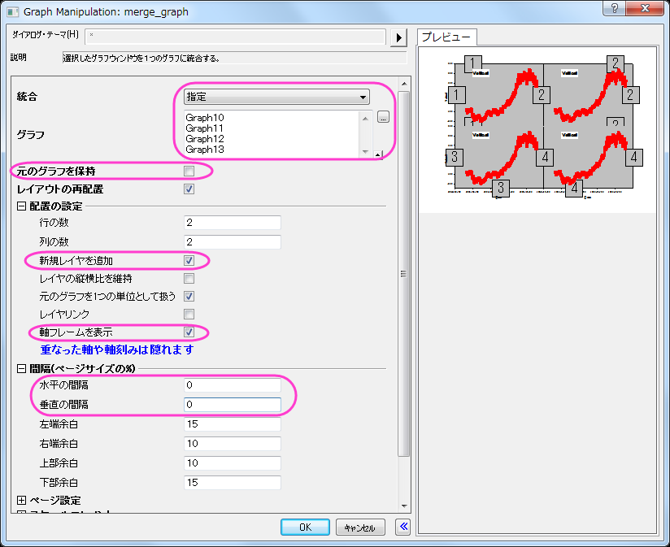
- 統合したグラフをアクティブにし、Originのメニューからグラフ操作：レイヤ管理を選択し、レイヤ管理ダイアログを開きます。レイヤ選択パネルで、名前をダブルクリックしてレイヤの名前を変更し、レイヤインデックスをクリックしながら上下にドラッグしてレイヤーの順序を変更します。最終レイヤの名前と順序が、下の画像と同じであることを確認します(プレビューパネルでレイヤのインデックスと位置を表示できます)。
- 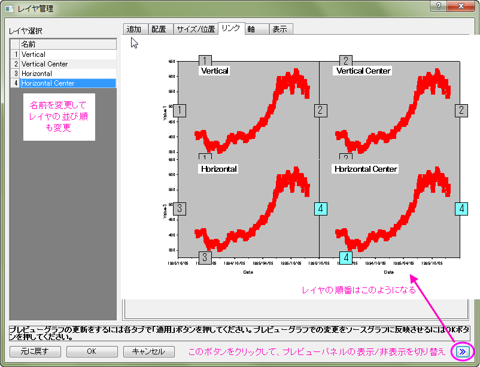
- レイヤ選択パネルで、キーボードのCtrlキーを押して、垂直中心、水平、水平中心のレイヤを選択します。リンクタブに移動し、リンク先ドロップダウンから1を選択します。そして、X軸リンク と Y軸リンク は 直接(1対1)にセットします。そして、適用ボタンをクリックします。
- 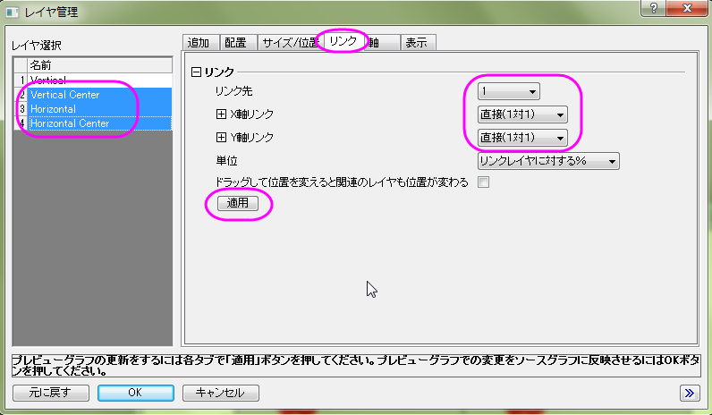
- 軸タブに移動し、左側のパネルから垂直レイヤを選択します。下、左、上、右全ての軸にチェックを付けます。上ブランチの軸刻みは内側を選択します。適用ボタンをクリックします。
- 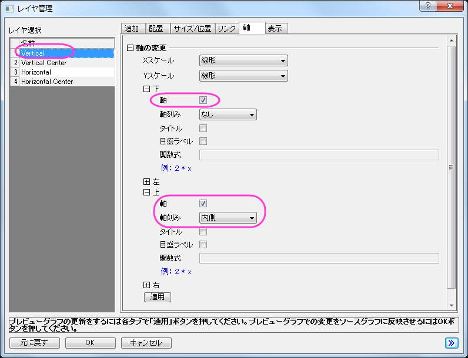
- 軸タブで垂直中心レイヤを選択し、下、左、右を同じように設定します。そして、上の設定は、下図のようにします。適用ボタンをクリックします。
- 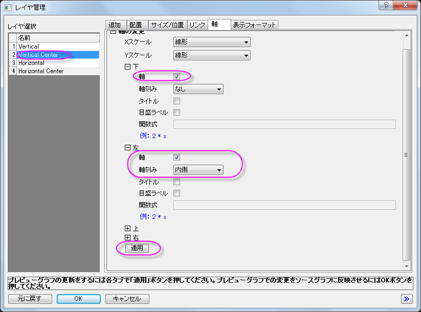
- 水平レイヤを選択し、軸タブで、上、右の軸チェックボックスにチェックを付けます。適用ボタンをクリックします。
- 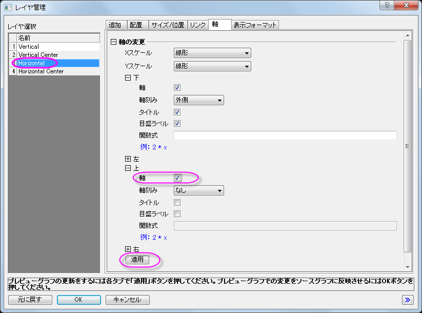
- 水平中心レイヤを選択し、軸 タブで、上の軸チェックボックスにチェックを付けます。適用ボタンをクリックします。
- 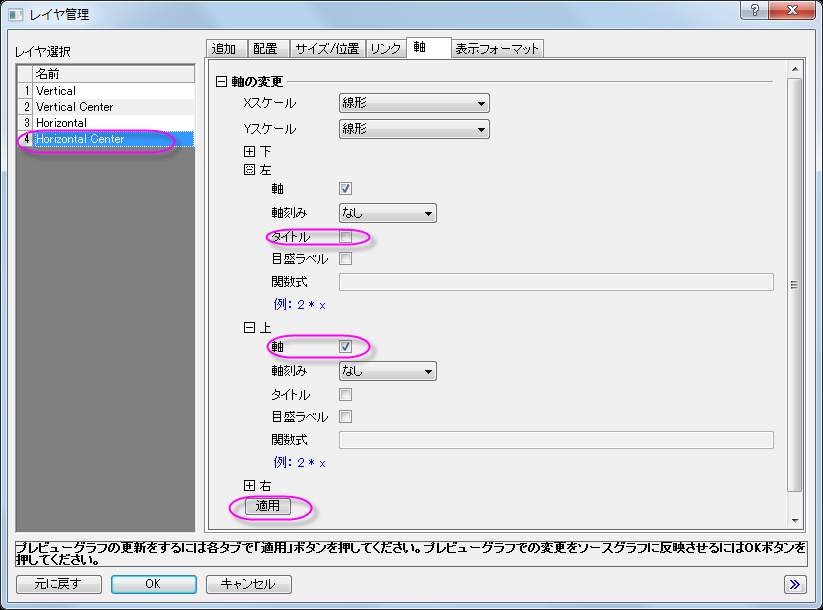
- OKボタンをクリックして、レイヤ管理ダイアログを閉じます。
- 左下のX軸をダブルクリックして、軸ダイアログボックスを開きます。スケールタブで、軸スケールを以下のように変更します。
- 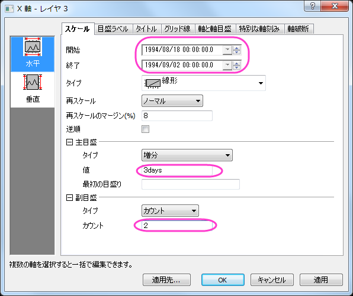
- スケールタブを開いたまま、垂直方向アイコンを選択してY軸を以下のように軸のスケール設定を変更します。
- 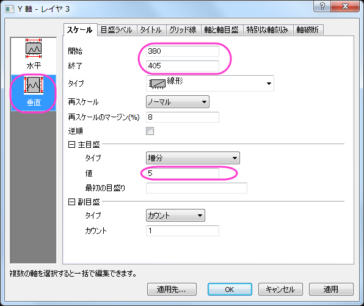
- 目盛ラベルタブを開き、左側パネルで下アイコンを選択し、X軸の目盛ラベルの表示を変更します。
- 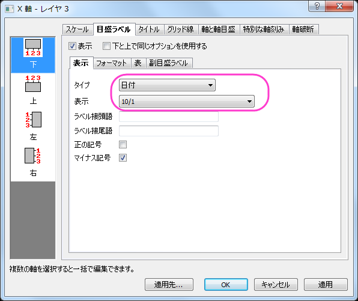
- 特別な軸刻みタブを開き、軸の終わりの表示でドロップダウンから隠すを選択します。
- 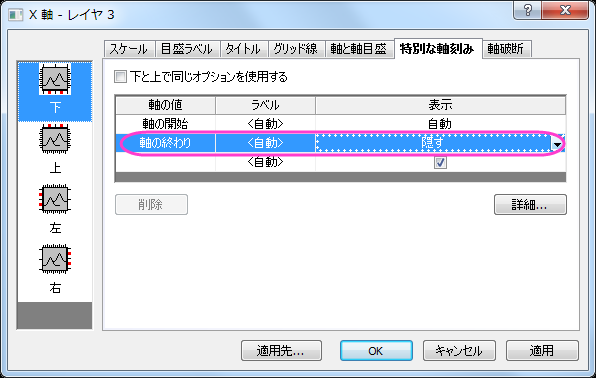
- 左側パネルで左アイコンを選択し、軸の終わりの表示でドロップダウンから隠すを選択します。
- 軸ダイアログの左下角でレイヤ4を選択します。ステップ18を繰り返します。
- 目盛ラベルタブを開き、フォーマットタブを選択します。フォントのサイズで16を選び、太字を選択します。
- OKをクリックして、適用し、ダイアログを閉じます。
- X 軸の目盛ラベルを右クリックし、フォーマットのコピーを選択します。グラフのページ外の領域で右クリックし、フォーマットの貼り付け先：全ての軸目盛ラベル：フォントを選択します。
- 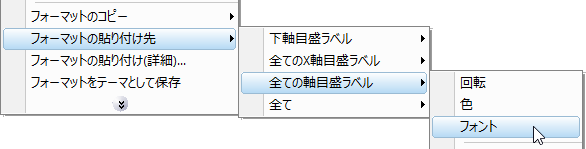
- 軸タイトルをクリックします。ミニツールバーで、フォントサイズを18にします。
- 編集した軸タイトルを右クリックし、フォーマットのコピー：スタイルを選択します。グラフのページ外の領域で右クリックし、フォーマットの貼り付け先：全ての軸目盛ラベル：フォントを選択します。
- Ｙ軸のタイトルをPriceに設定し、太字にします。